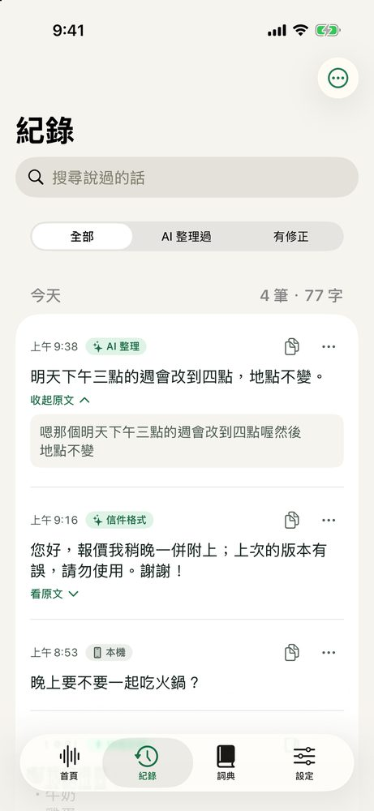
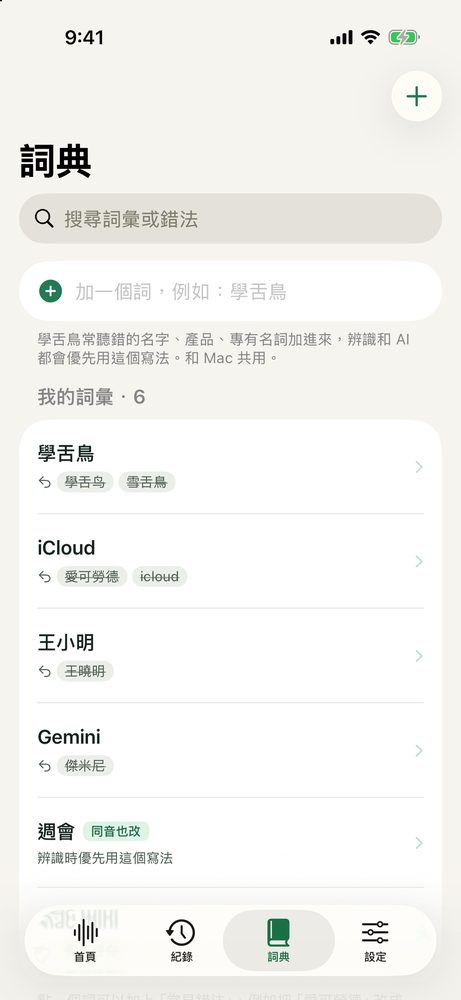
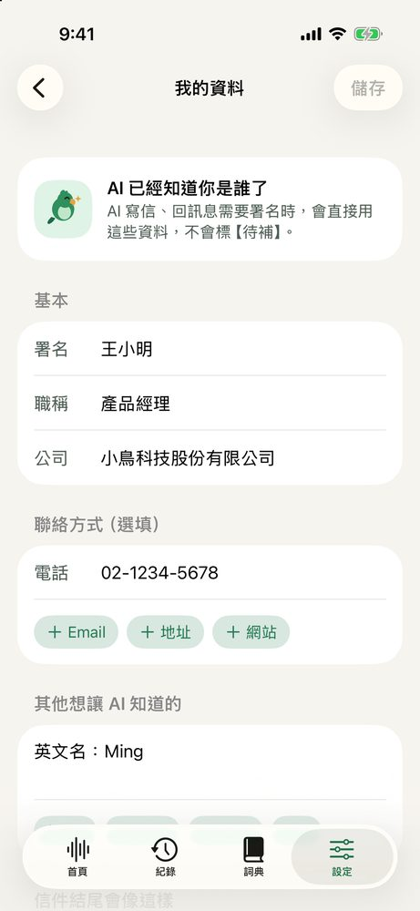
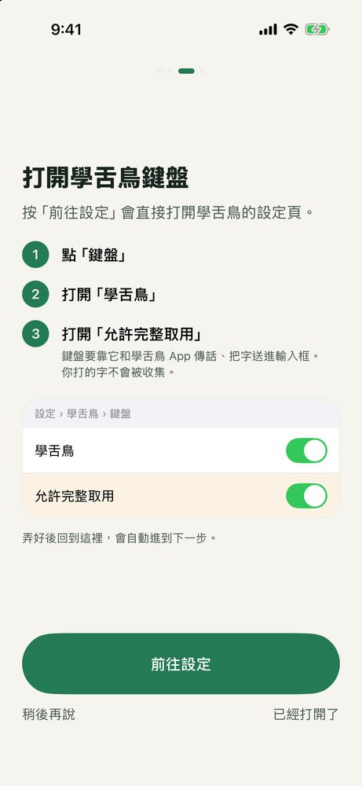

說話就是打字
iPhone 內建語音辨識在手機上轉文字，錄音不存檔、不上傳。
iPhone 語音鍵盤 · 已在 App Store 上架
在 LINE、訊息、郵件裡點一下麥克風就能說。iPhone 本機辨識，選一種 AI 改寫格式，每句說完自動整理好再貼上。








← 左右滑看更多


iPhone 內建語音辨識在手機上轉文字，錄音不存檔、不上傳。
語氣修正、信件格式、條理分明：選一次，之後每句都先改寫再貼上。
寫好的字調長短、正式度，或一鍵翻成常用的四種語言。
key 錯、額度用完、模型下架都直接告訴你，並附上解決方法。
這是 iOS 對所有需要和主 App 溝通的鍵盤用的權限名稱，開啟時系統會提醒「可傳送你輸入的內容」。學舌鳥沒有帳號、廣告和追蹤；聲音在手機上辨識，不會傳給我們。只有你選「我的 API key」時，要改寫的文字會直接送到你選的 AI 服務。
不用。一次買斷，之後的更新都包含在內。用自己的 API key 時，AI 服務的費用由該服務向你收取（Gemini 有免費額度）。
Mac 版免費。開了 iCloud 雲碟後，詞典、改寫格式和文字紀錄由 Mac 與 iPhone 共用。
iOS 26 以上的 iPhone 都能用。要用 Apple 內建 AI，需要支援 Apple Intelligence 的機型（iPhone 15 Pro 以後）。
NT$150 買斷 · iOS 26 以上 · 也有免費的 Mac 版，詞典和格式共用